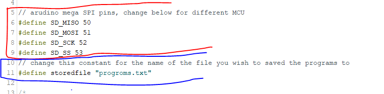
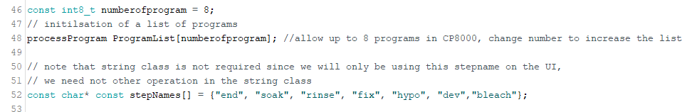
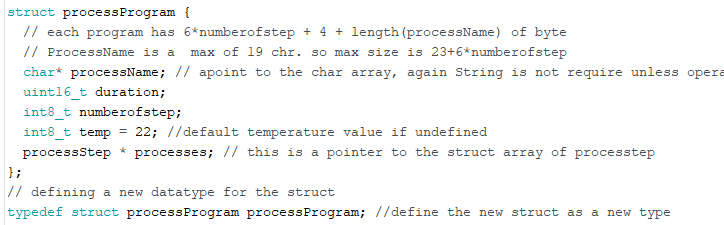
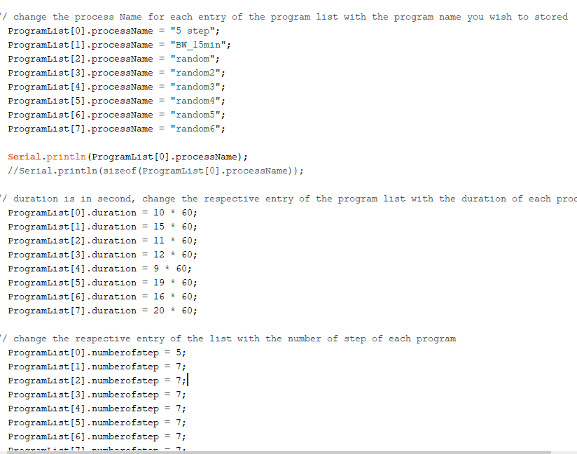
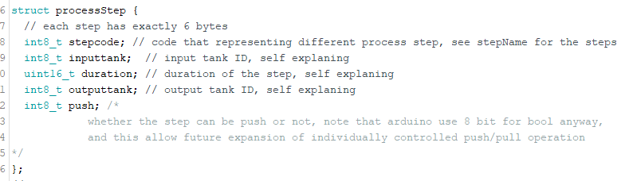
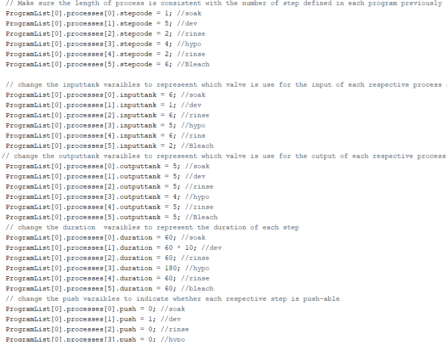

Instruction: writing program with Arduino script
This is for developers and makers only; the SD card should be programmed with a more user-friendly method such as web apps. this Arduino script used to program the SD card is for generating examples for testing the functionality of loading programs from Sd card, as the name suggests, it is made to test to store program on SD cards.
Please locate the arduino code: test_storeProgams.ino, and make a copy
for you to change the programs. Keep the original file, so it is a
backup.
Please follow the hookup guide to setup the hardware and Arduino before you make a change to the script. We are using the big SD module, but they all work in the same way as long as they are hooked up correctly for the SPI communication.
https://randomnerdtutorials.com/guide-to-sd-card-module-with-arduino/
Step 1: Setup the constants
There are three sections of constants you need to define just after the headers

The first set is the pin assignment for the SD card port, please refer to the Arduino board for the pin number of the SPI communication
The second section only has one constant that is the name of the file where you stored the programs, on default it should be a misspelt document called "progroms.txt", this file could also be renamed later use a PC by editing the filename.

The last section is the file specific constant, these describe the general configuration for all the programs hold in this file
The constant of numberofprogram indicates the number of programs you wish to store in the fie. The constant array of stepName is a lookup table for the stepCode to indicate what each step is in each process, please expand the list of stepName with as many variations of step you have on your machine.
Step 2: filling in the parameters
There are two set of parameters that need to be filled out, one set is for each processprogram on the programlist. These parameters describe the processes of all programs in the files.

The structure of processProgram contain a
processName, the duration of the entire process, the number of steps in
the process, and the temperature of the entire process, following by the
pointer to an array of process steps that contain the parameters of each
step.
Change these parameter is the setup() section of the code.
ProcessProgram should be right after Serial.begin(115200);

-
Name your program within the ProgramList array for each processName variable. This could be any name as long as it is below 20 characters long
NOTE: due to the constraint of the memory on the Arduino, it could only load up to 6 different programs, so
ProgramList[6]andProgramList[7]will never get use. -
for each program, type the duration in second to the duration variable in each
ProgramList. Min value: 0, max value: 65,535 -
type the number of step for each program on
ProgramListarray. Min value: 1, max value: 255 -
type the temp for each program on
ProgramListarray. Min value: 1, max value: 255
There is no need to define the processes now, we will do it in the next section.

The other set is for each step within each program on the program list.
In each step of the process, the step contains the stepcode where
stepName[stepcode] return the name of the step, the input tank number,
the duration of the step where the film is bath in the chemical, and the
output tank number, and a flag to indicate whether the step can be
push/pull.

Please copy and paste each line for the variables: stepcode, inputtank,
outputtank, duration, push to the number of steps you define in the
program section. And then change the value of each variable within the
structure.
The default code contains 8 different programs and the value for the
parameters are placeholder values. Please add more by copy and pasting
the entire list of steps for each program to the number of programs you
defined in Step 1. Please remember to change the index of ProgramList so
you are writing a new program in the list not overwrite the old one you
copied the list of steps from.
For each step, the 5 variables of each step have to be filled within each program. The index should be consistent with the number of steps you defined in the respective index of program on the ProgramList. The default should be a long list of placeholder values. Please edit the code so that the index of process is consistent with the numberofstep variable defined. None of the step should be skipped or left blank. These steps should be repeated for each program on the ProgramList.
1) Step code is the code representing the name of the step from the
stepName[] array defined in Step 1. min value: 0, max value: 255
2) inputtank is the solenoid valve you want your step to use for the
input chemical, CP800 only has 6 input port, so the valid range of
value is 1-6 inclusive, any other number will cause error. min
value: 1, max value: 6
3) outputtank is the solenoid valve you want your step to use for the
output chemical, CP800 only has 6 input port, so the valid range of
value is 1-6 inclusive, any other number will cause error. min
value: 1, max value: 6
4) Duration is the duration for the step, do not confuse it with the duration for the program you defined for the program. Min value: 0, max value: 65,535
5) Push indicate whether the step is pushable, 0 mean no, and 1 is yes. If the step is pushable, the push and pull value given before the start of the processing will affect the duration of this step, only accept 0 or 1 value, anything bigger than 1 is equal to 1. min value:0, max value:1